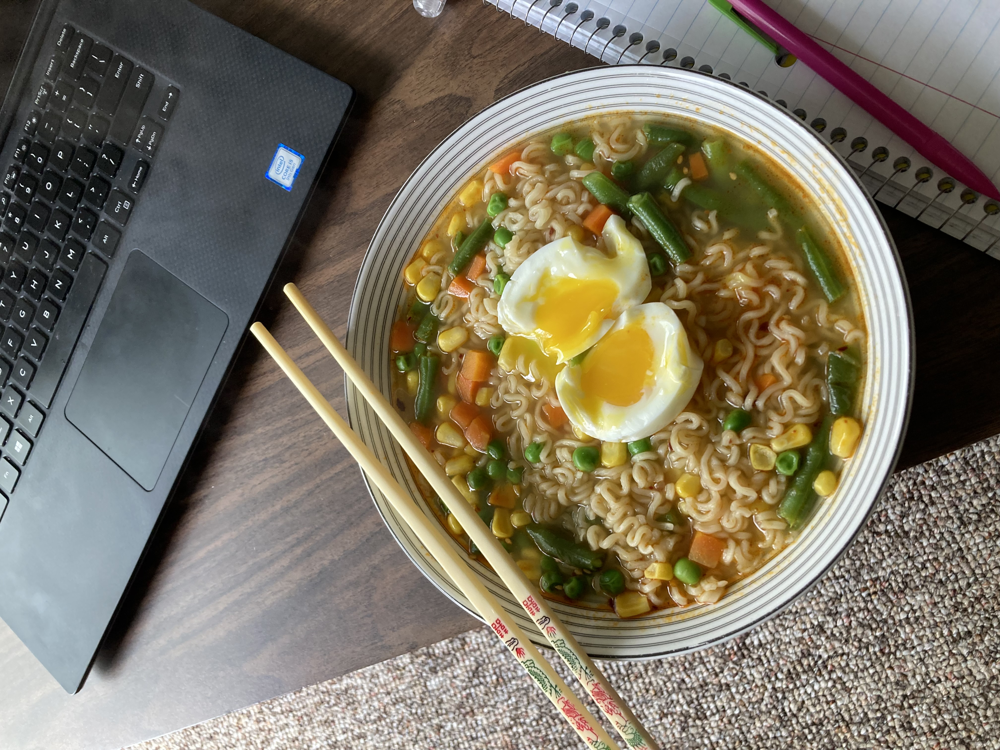
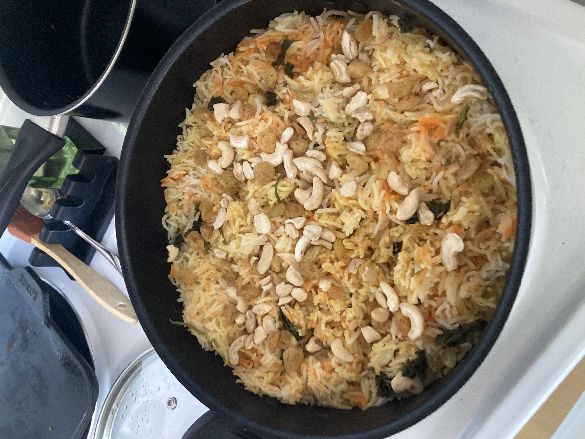
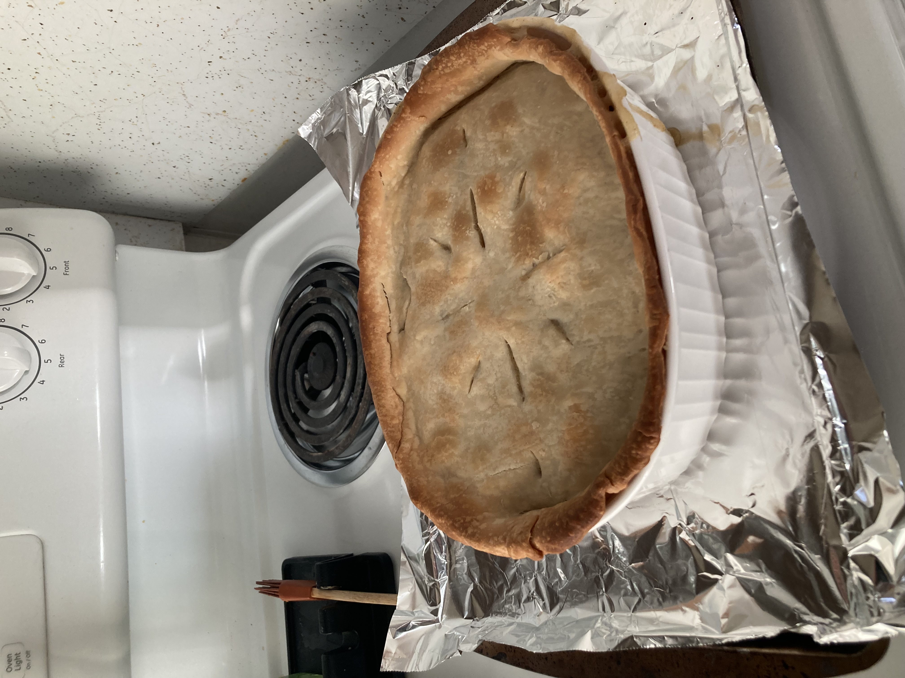
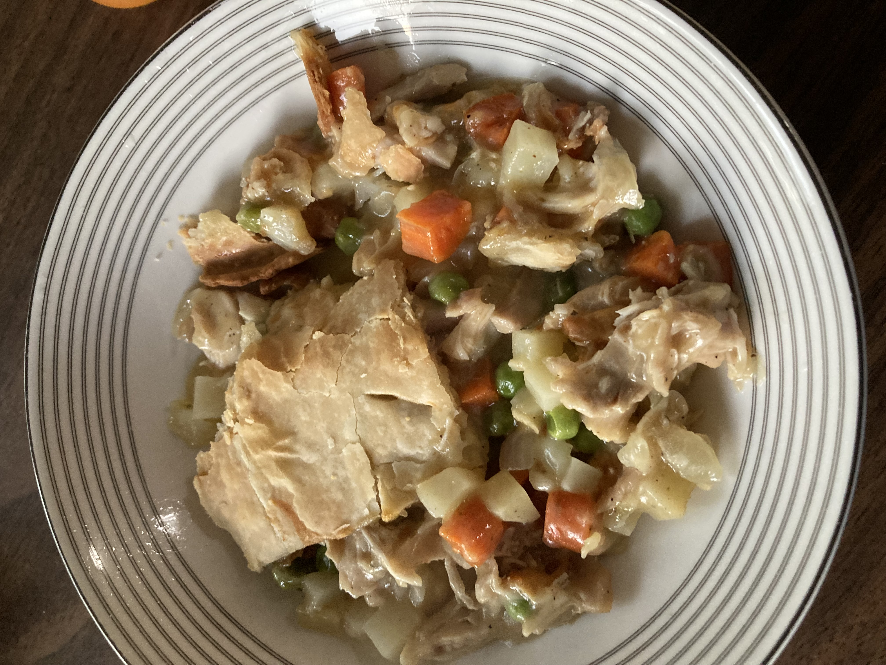
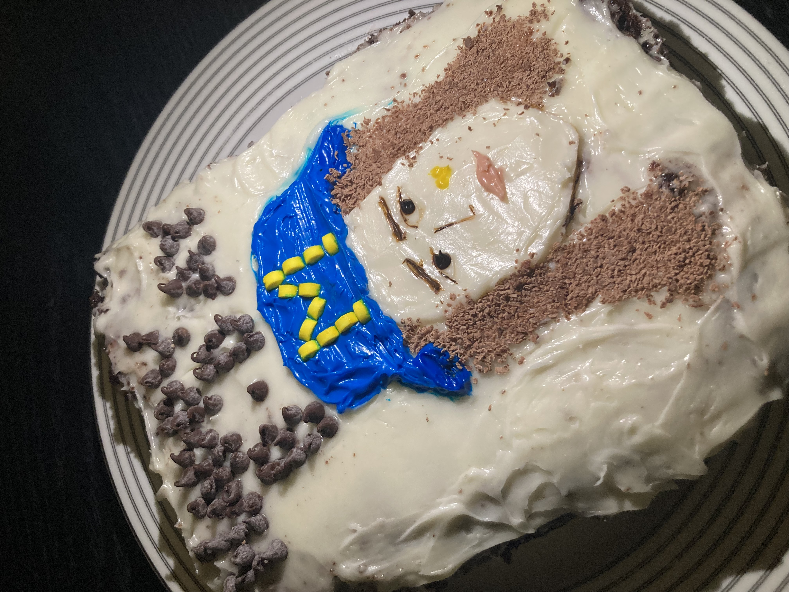
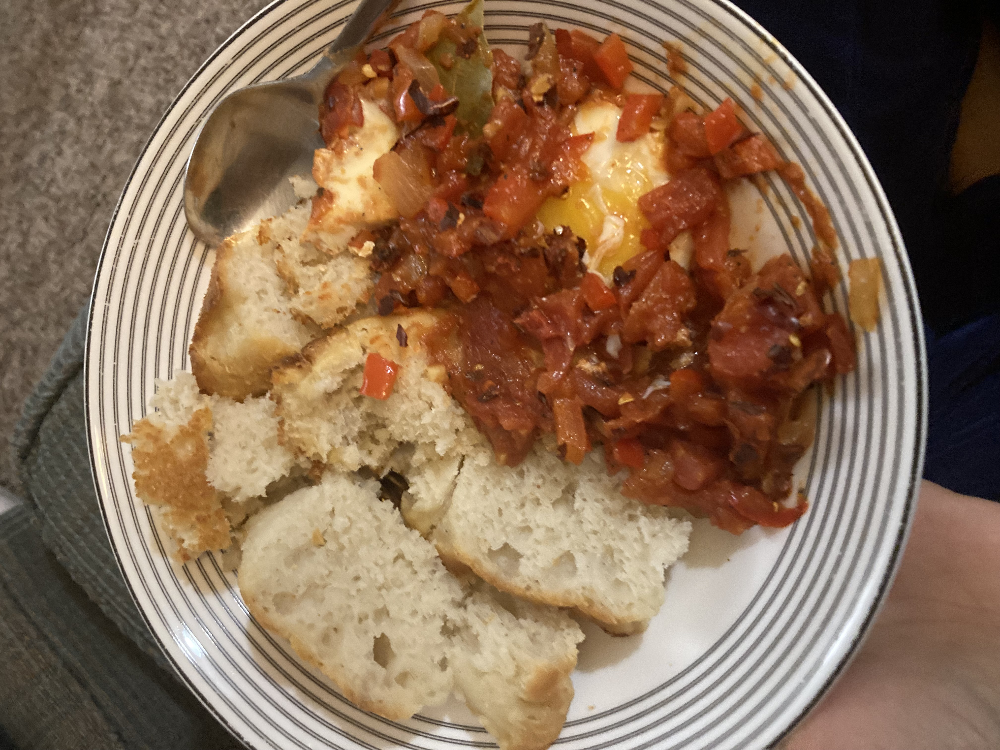
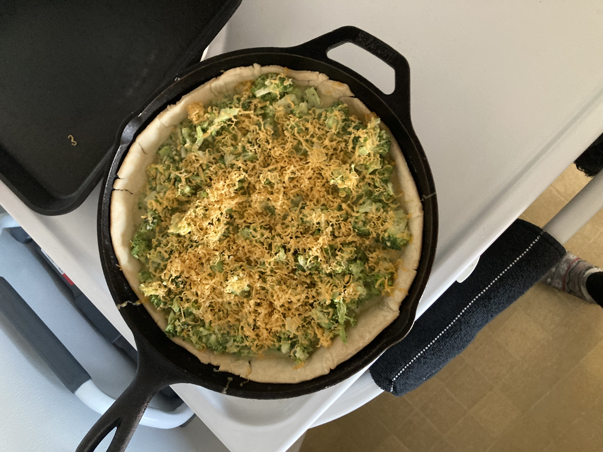
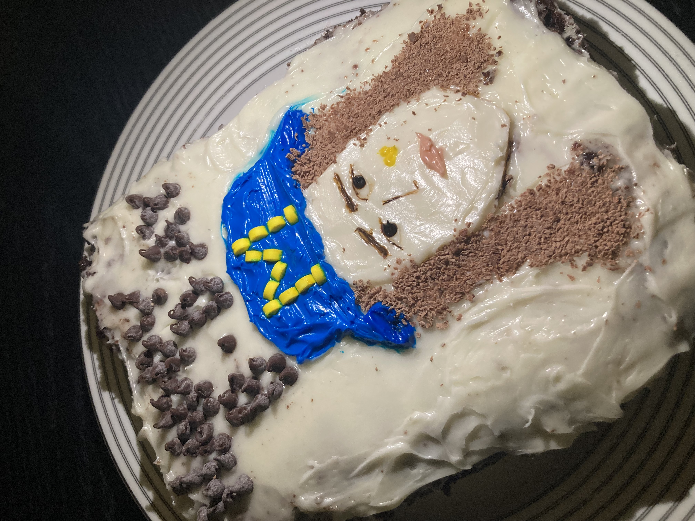
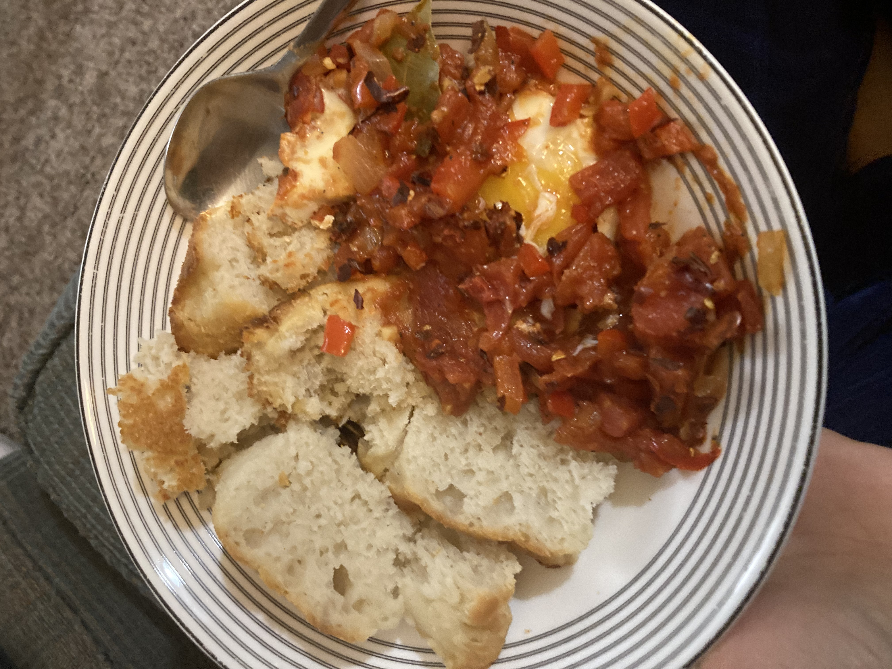
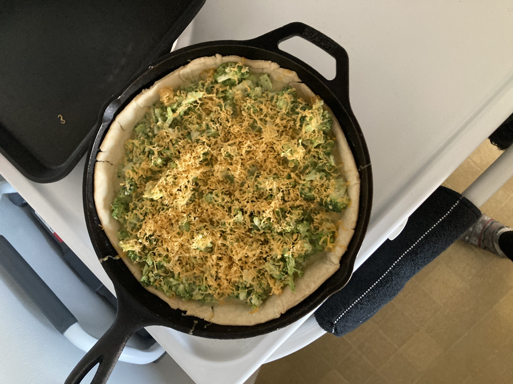

My Top Hits!
Some of my most beautiful and frequently recurring creations include "Julia-Style Ramen", "Chicken Biryani" and "Chicken Pot Pie".
   Baking Adventures
I also enjoy dabbling in baking and cake decoration. My foccacia-baking and quiche/pie skills are (obviously) better than my cake decoration. Check out my favorite foccacia recipe at this link: Bon Appetit's Foccacia.
 





Basics: Rice
If you are very new to cooking, like I was just last year, even the smallest things can seem quite challenging. I always reccomend finding a good recipie and following it. If you can ask a friend questions, even better! My favorite go-to place for recipies is my mom's cookign channel on YouTube! Here is the link to her Jeera Rice Recipie. This is one of my most re-watched YouTube videos. I have also added the recipie below!
Jeera Rice Ingredients
- 2 cups Basmati rice
- 1 tbsp. vegetable oil
- 1 tbsp. jeera (cumin seeds)
- 4 cups water
- 1.5-2 tbsp. preserved lemons, diced finely
Directions:
- Pour the rice in a colander and wash thoroughly for about 30 seconds to remove as much starch as possible. Drain.
- Heat a medium pot on high. Add oil and jeera. Fry for 30 seconds, stirring constantly.
- Add the rice and fry for 1 minute, stirring constantly.
- Add the water and preserved lemons. Stir well. Cover and bring to a boil.
- Gently fluff up the rice and serve.>